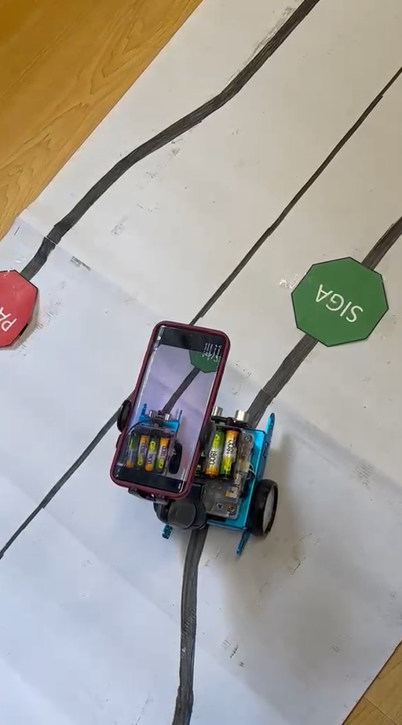
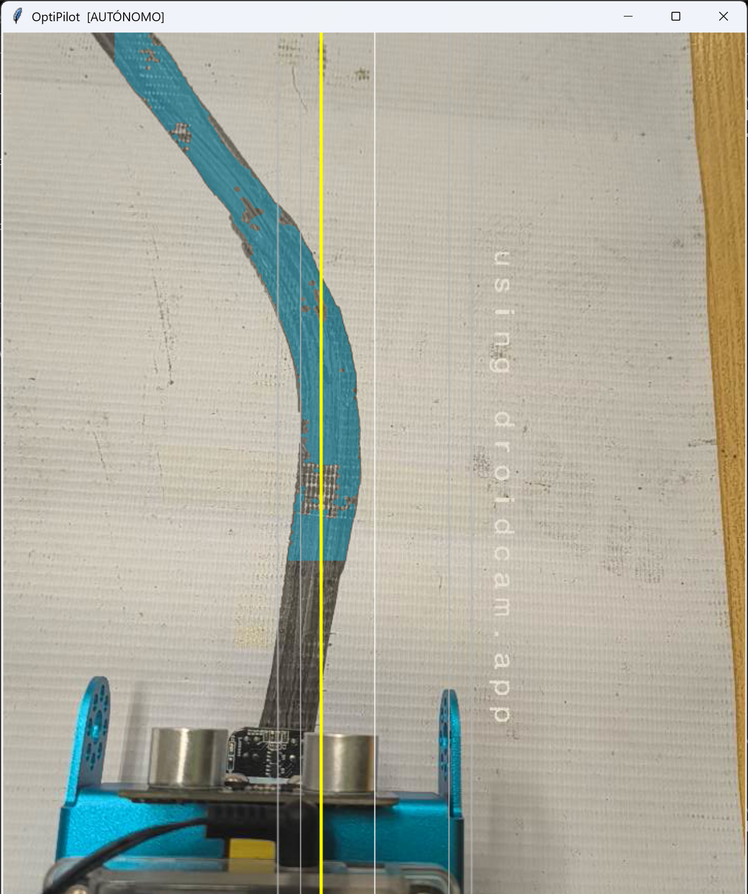

OptiPilot: Sistema de Navegación Autónoma y Control de Tráfico para mBot
Jaime Andrés Cardona Díaz · Daner Alejandro Salazar Colorado · Carlos Alberto Gomez Posada
Visión Artificial en Tiempo Real · Universidad de Caldas · 2026
12,007
fotogramas procesados
corrida_20261007_111355
24.51FPS
promedio de la corrida
≈ 490 s de recorrido
4.69ms
latencia media de procesamiento
p95 = 5.58 ms por fotograma
9de 9
paradas PARE completas
T = 3.0 s en cada parada
8.09px
variación media de la posición lateral
entre fotogramas · p95 28.7 px
01Objetivo
Un mBot debe seguir una línea negra sobre la pista, corregir su trayectoria y reconocer dos señales: PARE (octágono rojo: detenerse un tiempo T) y SIGA (octágono verde). El Reto 1 exige visión artificial clásica: sin aprendizaje profundo, sin cascadas Haar ni modelos preentrenados.
02Foto real del mBot en pista

mBot en pista con las señales PARE (izquierda) y SIGA (derecha). Cámara: smartphone montado sobre el robot. Captura del 7 oct 2026.
03Pipeline de visión
Placeholder
Diagrama del pipeline de visión
Área reservada para la figura del flujo por etapas (SVG o PNG).
Preprocesado: Gauss 5 × 5 y conversión a HSV
Segmentación: inRange por color, apertura y cierre
Candidatos: contornos y approxPolyDP
Confirmación temporal: N = 3 fotogramas, tolerancia K = 2
Máquina de estados: PARE detiene el robot durante T = 3.0 s
Control: zona muerta e histéresis sobre la posición lateral
Transporte: RFCOMM, 1 byte ASCII por comando
04Corrida final
corrida_20261007_111355: entrada en vivo desde la cámara de smartphone por HTTP. Procesamiento en PC con Python 3.14, OpenCV y NumPy.
Uso del tiempo por fotograma11.5 %
4.69 ms de procesamiento frente a 40.8 ms disponibles a 24.51 FPS
05Técnicas autorizadas
Técnica
Uso y parámetros reales
Filtro Gaussiano
GaussianBlur 5 × 5 con σ automática, antes de convertir a HSV.
Espacio HSV
cvtColor BGR → HSV. Línea: V ≤ 110. PARE: H 0–10 y 170–179. SIGA: H 45–85.
Máscaras / morfología
inRange por color; apertura y cierre con elipse de 5 px.
approxPolyDP para octágonos
approxPolyDP con ε = 0.03 × perímetro. Válido con 7–9 vértices y aspecto entre 0.45 y 2.20.
Histéresis temporal
Confirma tras N = 3 fotogramas con tolerancia K = 2; re-arma tras 5 fotogramas sin ver la señal.
Las cuatro primeras figuran en la lista de técnicas permitidas del Reto 1. La histéresis temporal es lógica de conteo, sin aprendizaje.
06Señales PARE y SIGA
Parada PARE de 3.0 sSIGA confirmadoEje: minutos de la corrida
PARE: 9 confirmaciones y 9 paradas completas de T = 3.0 s. Exceso medio sobre T: 46 ms (máx. 164 ms).
SIGA: 21 confirmaciones. SIGA se registra, pero no condiciona la reanudación: la decide el temporizador.
Zona muerta de ±10 % del ancho del fotograma e histéresis de 3 % alrededor del objetivo central.
08Captura del visor OpenCV

Modo AUTÓNOMO. Cian: máscara de la línea. Amarilla: posición lateral estimada. Blanca: objetivo central. Grises: zona muerta e histéresis. Captura del 6 oct 2026.
09Video de la corrida
Placeholder
Código QR
Escanea el código para ver el video de la corrida. Enlace pendiente de publicar.
10Conclusiones
Resultado principal: 9 de 9 paradas PARE completas con T = 3.0 s, en 12,007 fotogramas a 24.51 FPS.
Pipeline clásico y explicable por etapa; solo técnicas permitidas por el Reto 1.
Procesamiento en tiempo real: 4.69 ms medios por fotograma, p95 5.58 ms.
Reanudación autónoma por temporizador tras cada parada PARE.
11Límites y trabajo pendiente
Sin anotación de referencia: no hay precisión ni recall de PARE y SIGA (criterios SC-001 a SC-003 pendientes).
Seguimiento inestable: 215 pérdidas de línea y 59 recuperaciones registradas.
Dos paradas separadas por 4 s podrían ser la misma señal; falta verificarlo con anotación.
La relación entre el comando y el giro físico depende del montaje: riesgo abierto.
24.5 FPS frente a 30 FPS objetivo.
12Referencias
Reto de visión artificial: el cerebro de un robot autónomo seguidor de línea. Enunciado del Reto 1.
Buitrago Carmona, F. Fundamentos Visión Artificial [material de curso]. Facultad de Inteligencia Artificial e Ingenierías, Universidad de Caldas.